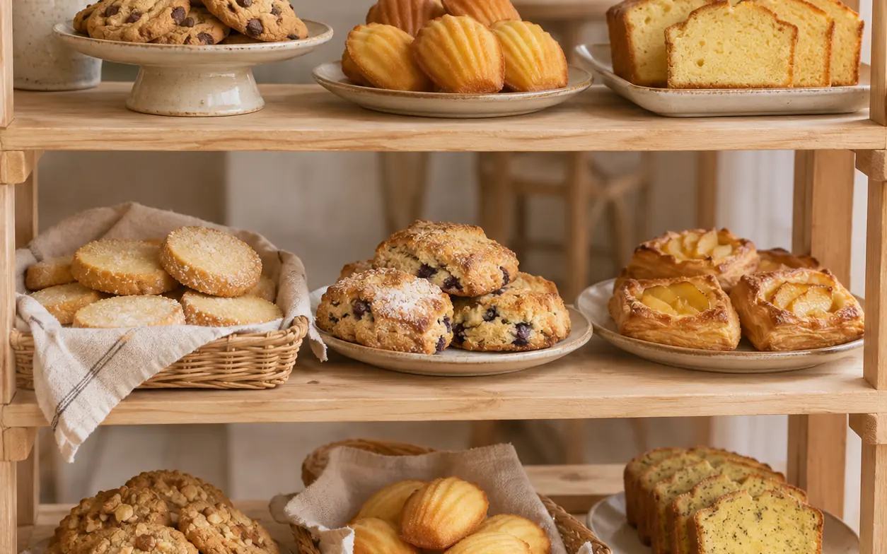
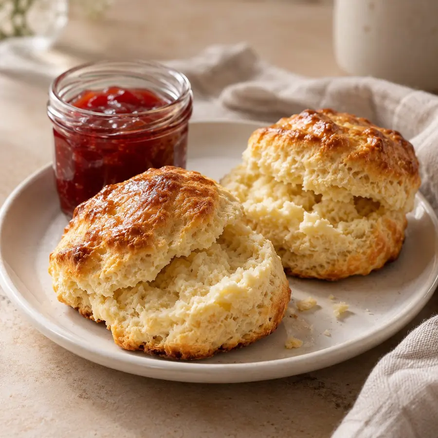
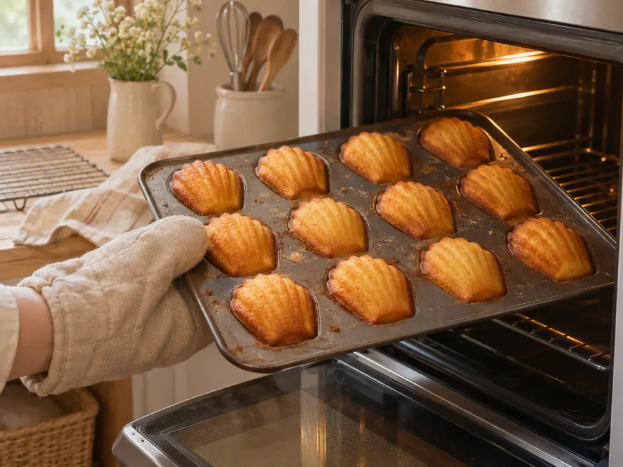
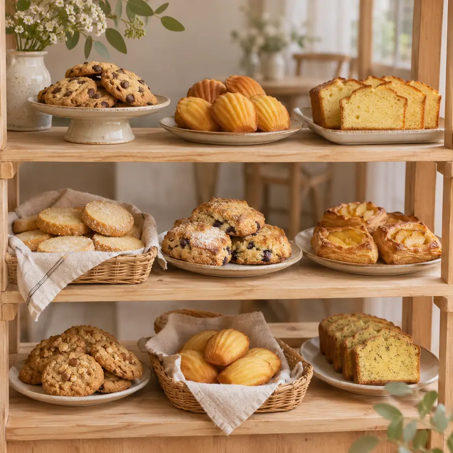

マドレーヌとフィナンシェ
焦がしバターの香り。いちばん人気の2つです。
1個 260円〜

今日の営業10:00〜18:00（売り切れしだい閉店）
お休み毎週 月・火
お取り置きお電話で前の日まで
RECOMMEND
焦がしバターの香り。いちばん人気の2つです。
1個 260円〜

外はさっくり、中はしっとり。お昼までに売り切れる日も。
1個 320円

秋から冬だけの、季節の素材の焼き菓子です。
1切れ 380円〜

OUR SHOP
粉とバターと卵。材料はシンプルなぶん、焼きたてのおいしさを大切にしています。焼き上がりの時間はお知らせと Instagram でお知らせします。
お店のことを読む →その日の焼き上がりや、売り切れのお知らせを載せています。（見本のため、リンクはありません）

